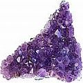

Experiências & Testemunhos Pessoais
Dramáticas histórias da vida real sobre cura oral, de dentes e gengivas por meios próprios (FVM)
Complementando muitos "fragmentos" de histórias da vida real sobre dentes e/ou gengivas encontrados ao longo da página CuraDente, essa seção expõe relatos mais extensos e poderosos testemunhos sobre experiências pessoais com a auto-cura de dentes e gengivas, tipicamente após a odontologia e os dentistas convencionais e a “sabedoria” química falharem.
Exemplos mais “opostos” mostrando como dentes, gengivas ou até mesmo a saúde geral pode ser prejudicada por tratamento dentário tóxico e invasive e/ou cuidados dentários convencionalmente aprovados podem ser encontrados Convencional: arsenal terapêutico da moderna odontologia.
Observe: testemunhos de cura dental (inclusive de rebrota dentária em adultos) baseados em “intervenções” e práticas espirituais ou contendo um forte elemento espiritual (sim, eles existem) são apresentados na seção Espiritualidade.